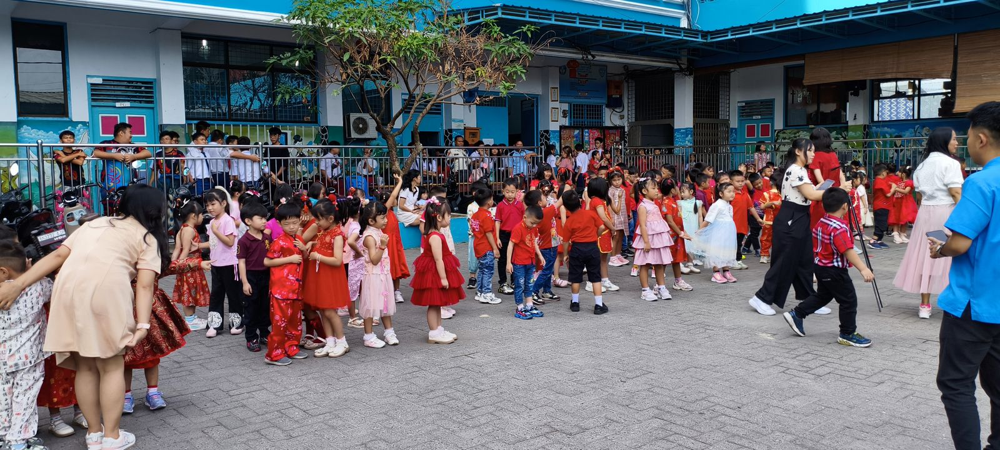
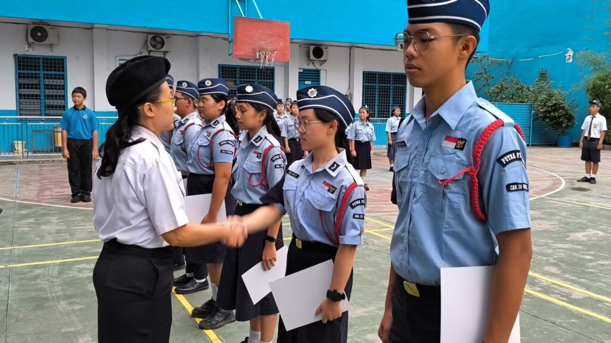
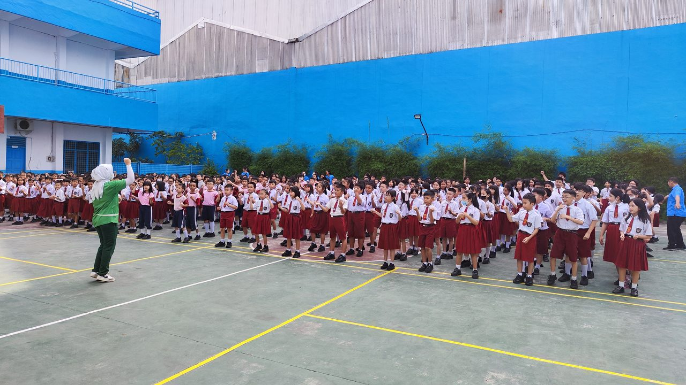

Kegiatan Sekolah
Semua kegiatan yang telah dilaksanakan
← Kembali ke Kegiatan
 →
→
→
→
→
→
 →
→
 →
→
→
→


19 September 2026
Kunjungan Edukatif ke Kebun Binatang
Field trip pengenalan satwa dan cinta lingkungan bersama siswa dan guru.

3 Maret 2026
Perayaan Imlek
Perayaan Tahun Baru Imlek yang meriah bersama seluruh siswa.

17 Agustus 2025
Peringatan HUT ke-80 Kemerdekaan RI
Upacara bendera dan lomba 17-an yang meriah.
Setiap Jumat
Ibadah Rutin Mingguan
Pembinaan iman dan akhlak mulia siswa.
2 Mei 2024
Kegiatan Harkdiknas 2024
Peringatan Hari Pendidikan Nasional 2024.

3 September 2024
Kunjungan Susu Milo
Kunjungan edukatif susu sehat untuk siswa.
Juni 2025
Wisuda / Pelepasan Siswa Kelas VI
Pelepasan siswa kelas VI tahun ajaran 2024/2025.
April 2025
Kegiatan Bakti Sosial
Berbagi kasih dengan masyarakat sekitar sekolah.